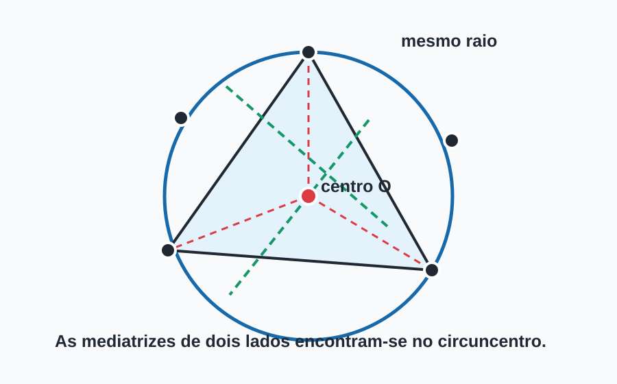

beecrowd 1137 · circuncentro
Pontos Cocirculares
Encontrar a maior quantidade de pontos que pode pertencer à mesma circunferência.
Três pontos determinam o candidato
Três pontos não colineares determinam uma única circunferência. Portanto, testamos cada combinação de três pontos, construímos seu circuncírculo e contamos quantos dos outros pontos têm o mesmo raio em relação ao centro encontrado.
Geometricamente, o centro é a interseção de duas mediatrizes. No código, a fórmula em coordenadas evita representar retas verticais e horizontais como casos especiais.

O determinante detecta degeneração
Quando D = 0, a área orientada do triângulo também é zero: os três pontos são
colineares e não existe um círculo finito único passando por eles. Esse trio deve ser ignorado.
==.
A solução usa math.isclose com tolerâncias relativa e absoluta.
Busca por circunferências
Complexidade e contagem
Existem O(N³) trios e, para cada um, podemos examinar até O(N)
pontos. Com no máximo 100 pontos e o limite generoso citado no material, a abordagem direta é suficiente.
circulo = circuncirculo(
pontos[i], pontos[j], pontos[k]
)
if circulo is None:
continue
atual = 3
for m in range(k + 1, quantidade):
if esta_no_circulo(pontos[m], circulo):
atual += 1Fontes e validação
- Explicação e solução C++ originais — estratégia de enumerar trios.
- CGAL: circumcenter — três pontos não colineares como pré-condição do circuncentro.
- CGAL: orientation — classificação de três pontos como giro ou colinearidade.
- Python: math.isclose — comparação numérica com tolerância.